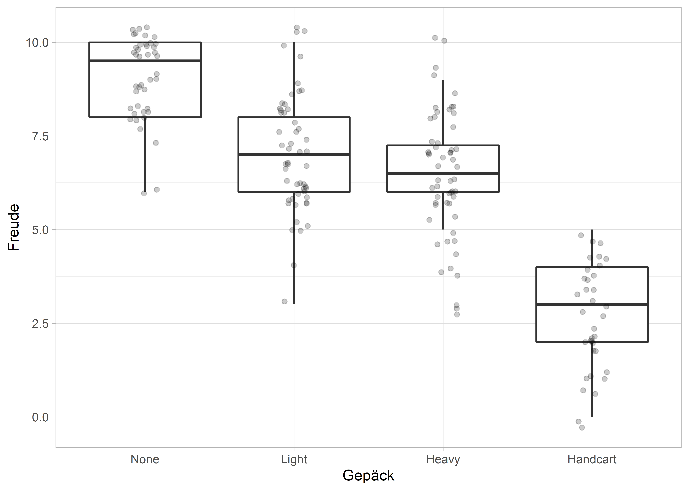

Eine ANOVA ist ein Omnibus-Test, d.h., dass uns ein signifikanter \(F\)-Wert erstmal nur sagt, dass sich die Gruppenmittelwerte (die Mittelwerte der unterschiedlichen Faktorstufen) voneinander unterscheiden. Wir wissen aber noch nicht wo. Im Grunde ist ein signifikantes Ergebnis einer ANOVA eine Aufforderung dazu, weitere Untersuchungen anzustellen. An dieser Stelle hat man nun zwei Möglichkeiten; entweder man hat bereits eine Hypohese oder Ahnung, wo die Unterschiede liegen könnten. In diesem Fall kann man vorab Kontrase (also geplante Kontraste) definieren und diese Unterschiede prüfen. Hat man keine Hypothesen und will “sich überraschen lassen”, macht man einen Post-hoc-Test. Wir jagen unseren potenziellen Unterschieden also hinterher.
Im Gegensatz zu den auf unseren Hypothesen fundierenden geplanten Kontrasten sind Post-hoc-Tests relativ brutal und einfallslos. Sie nehmen sich alle Gruppen der von uns definierten Faktoren vor und berechnen paarweise Vergleiche; also werden im Prinzip ganz viele \(t\)-Tests berechnet. Das hört sich nach einer ganz dummen Idee an und ist es ohne spezielle Vorkehrungen auch, denn durch die vielen Tests auf einmal, kommt es zur \(\alpha\)-Fehler-Kumulierung. Was ist denn das jetzt schon wieder?
Irgendwann wurde willkürlich festgelegt, dass ein \(p < 0.05\) ein statistisch signifikantes Ergebnis bedeutet. Mit diesem Signifikanzniveau von \(\alpha = 0.05\) gehen wir vorab also immer davon aus, dass die Wahrscheinlichkeit einen Fehler 1. Art (\(\alpha\)-Fehler) zu begehen 5% ist. Ein Fehler 1. Art tritt ein, wenn wir uns dafür entscheiden, einen Effekt gefunden zu haben, obwohl es eigentlich keinen gibt. Gibt es also wirklich keinen Effekt in einer Population, und führen wir unser Experiment 100 Mal immer auf dieselbe Art und Weise durch, gehen wir davon aus, dass wir fälschlicherweise trotzdem 5 Mal ein signifikantes Ergenis erhalten. Macht man jetzt mehrere Tests, wie es bei den Post-hoc-Tests nun gemacht werden soll, erhöht sich auch die Wahrscheinlichkeit einen Fehler 1. Art zu begehen. Diese Wahrscheinlichkeit eines Fehlers 1. Art lässt sich berechnen durch \[\text{Fehler} = 1 - (0.95)^n\]
Führen wir einen Test durch, ist die Wahrscheinlichkeit eines \(\alpha\)-Fehlers \(1 - (0.95)^1 = 0.05\), also 5%, wie ursprünglich definert. Mit der Anzahl unserer Tests steigt die Wahrscheinlichkeit eines Fehlers jedoch rapide. Bei drei Tests sind es schon \(1-(0.95)^3 = 14.3\,\%\) und bei 5 Tests \(1-(0.95)^5 = 22.6\,\%\). Bei fünf paarweisen Vergleichen gehen wir also schon vorab davon aus, dass mindestens einer fälschlicherweise signifikant ist. Na super. Und jetzt?
Es gab und gibt viele kluge Köpfe, die sich dem Problem angenommen haben. Ihre Idee war nun, das Signifikanzniveau von \(\alpha = 0.05\) zu reduzieren, um so die Schwelle, ab wann ein Ergebnis statistisch signifikant ist, niedriger zu legen. Clever! Es gibt mittlerweile viele Möglichkeiten, den \(p\)-Wert bei Post-hoc-Tests zu korrigieren, deshalb haben Toothaker (1993) und Field (2018) diese für uns im Bereich der ANOVA-Designs zusammengefasst:
| Gruppengröße | Populations-Varianzen | Verfahren | Referenz |
|---|---|---|---|
| Gleichgroß | Homogen | Tukey HSD | Tukey (1949) |
| Leicht unterschiedlich | Homogen | Gabriel | Gabriel (1969) |
| Sehr unterschiedlich | Homogen | Hochbergs GT2 | Hochberg (1974), Hochberg (1975) |
| Egal | Unterschiedlich | Games-Howell | Games & Howell (1976) |
Die Methode, die alle kennen (Bonferroni) wird nicht mehr empfohlen, weil sie zu konservativ ist. Möchte man jedoch eine ähnliche Methode durchführen, sollte man die (Bonferroni-)Holm-Methode (Holm, 1979) in Betracht ziehen, da diese mehr Power hat.
Tukey HSD und Bonferroni-Holm können mit Funktionen aus dem Paket rstatix durchgeführt werden. Für letztere muss jedoch das Paket emmeans (Lenth, 2020) installiert sein.
# Tukey HSD
<DATA> %>% tukey_hsd(<DV> ~ <PRED>)
# Bonferroni-Holm
<DATA> %>% emmeans_test(<DV> ~ <PRED>, p.adjust.method = "holm")Für die anderen Tests sieht es in R schlecht aus. Dafür bietet R viele weitere Tests, die stattdessen eingesetzt werden können. Weitere Informationen dazu findet man bei Field (2018).
Für das Beispiel der einfaktoriellen ANOVA hatten wir uns einen fiktiven Datensatz zu Besuchern des Phantasialandes angeschaut. In diesem Datensatz finden wir die empfundene Freude von 186 Besuchern des Phantasialandes (Variable joy), eingeteilt in Gruppen von Handgepäck-Typ. Wir haben Besucher ohne Handgepäck, mit leichtem und schwerem Rucksack und jenen, die einen Bollerwagen ziehen müssen. Mit der einfaktoriellen ANOVA haben wir bereits herausgefunden, dass sich diese Gruppen hinsichtlich ihrer Freude signifikant unterscheiden.
phantasialand <- read_spss("data/phantasialand.sav") %>%
mutate_if(is.labelled, as_factor)
# Datensatz
phantasialand## # A tibble: 186 x 3
## id backpack joy
## <chr> <fct> <dbl>
## 1 1 Light 5
## 2 2 Light 7
## 3 3 Handcart 3
## 4 4 Heavy 6
## 5 5 Heavy 3
## 6 6 Heavy 6
## 7 7 Handcart 4
## 8 8 None 10
## 9 9 None 9
## 10 10 Handcart 5
## # ... with 176 more rows# Boxplot
phantasialand %>%
ggplot(aes(x = backpack, y = joy)) +
geom_boxplot(outlier.color = NA) +
geom_jitter(width = 0.1, alpha = 0.2) +
labs(x = "Gepäck", y = "Freude")
## ANOVA Table (type II tests)
##
## Effect DFn DFd F p p<.05 ges
## 1 backpack 3 182 126.164 3.14e-44 * 0.675An dieser Stelle könnten wir entweder den Tukey HSD durchführen oder paarweise Vergleiche mit Bonferroni-Holm-Korrektur durchführen.
## # A tibble: 6 x 8
## term group1 group2 estimate conf.low conf.high p.adj p.adj.signif
## * <chr> <chr> <chr> <dbl> <dbl> <dbl> <dbl> <chr>
## 1 backpack None Light -2.01 -2.80 -1.23 2.20e- 9 ****
## 2 backpack None Heavy -2.61 -3.39 -1.83 6.93e-14 ****
## 3 backpack None Handcart -6.44 -7.32 -5.57 1.73e-14 ****
## 4 backpack Light Heavy -0.592 -1.32 0.139 1.57e- 1 ns
## 5 backpack Light Handcart -4.43 -5.26 -3.60 1.73e-14 ****
## 6 backpack Heavy Handcart -3.84 -4.66 -3.01 2.01e-14 ****## # A tibble: 6 x 8
## .y. group1 group2 df statistic p p.adj p.adj.signif
## * <chr> <chr> <chr> <dbl> <dbl> <dbl> <dbl> <chr>
## 1 joy None Light 182 6.63 3.67e-10 7.35e-10 ****
## 2 joy None Heavy 182 8.68 2.15e-15 6.44e-15 ****
## 3 joy None Handcart 182 19.1 1.87e-45 1.12e-44 ****
## 4 joy Light Heavy 182 2.10 3.70e- 2 3.70e- 2 *
## 5 joy Light Handcart 182 13.8 3.54e-30 1.77e-29 ****
## 6 joy Heavy Handcart 182 12.1 4.05e-25 1.62e-24 ****In diesem Fall liefern die beiden Verfahren unterschiedliche Ergebnisse. Nach der Tukey-Methode finden wir signifikante Unterschiede zwischen allen Gruppen, jedoch keinen signifikanten Unterschied zwischen jenen Besuchern mit leichten und schweren Rucksäcken. Nach der Bonferroni-Holm-Methode hingegen finden ir einen signifikanten Unterschied, da \(p = .037\). Das ist zwar “nur knapp” unter unserem Signifikanzniveau von \(\alpha = 0.05\), aber bei der Signifikanz ist das wie bei einer Schwangerschaft: Man ist entweder schwanger oder nicht. Es gibt kein “bisschen” schwanger oder “gerade so schwanger”. Es gibt auch kein “schwangerer” oder “gerade nicht schwanger”/“marginal schwanger”; man sollte bei solchen Formulierungen in Bezug auf statistische Signifikanz berechtigterweise kritisch sein. In den meisten Fällen hat der Autor einfach selbst keine Ahnung.
Die unterschiedlichen Ergebnisse von zwei unterschiedlichen Test bei identischer Datenlage ist jedenfalls nicht ungewöhnlich. Auf der sicheren Seite ist man, wenn man sich vor der Analyse auf Basis der Literatur für ein Verfahren entscheidet und dann nur dieses Verfahren durchführt.
Auch für Post-hoc-Tests hat Rand Wilcox (2012) natürlich robuste Alternativen entwickelt und im Paket WRS2 (Mair & Wilcox, 2020) umgesetzt. Für einfaktorielle Varianzanalysen ist das die Funktion lincon().
Bei unserem Beispiel aus dem Phantasialand sähe das folgendermaßen aus.
## Call:
## lincon(formula = joy ~ backpack, data = phantasialand)
##
## psihat ci.lower ci.upper p.value
## None vs. Light 2.36830 1.55112 3.18548 0.00000
## None vs. Heavy 2.77828 1.87293 3.68364 0.00000
## None vs. Handcart 6.64103 5.53054 7.75151 0.00000
## Light vs. Heavy 0.40998 -0.44968 1.26964 0.20021
## Light vs. Handcart 4.27273 3.19526 5.35019 0.00000
## Heavy vs. Handcart 3.86275 2.72189 5.00360 0.00000Hier sind die Ergebnisse in Einklang mit der Tukey-HSD-Methode, es gibt keinenen statitistisch signifikanten Unterschied zwischen jenen Besuchern mit leichten und schweren Rucksäcken.
Field, A. P. (2018). Discovering Statistics using IBM SPSS Statistics (5th ed.). SAGE.
Gabriel, K. R. (1969). Simultaneous Test Procedures - Some Theory of Multiple Comparisons. The Annals of Mathematical Statistics, 40(1), 224–250.
Games, P. A., & Howell, J. F. (1976). Pairwise Multiple Comparison Procedures with Unequal N’s and/or Variances: A Monte Carlo Study. Journal of Educational Statistics, 1(2), 113–125. https://doi.org/10.3102/10769986001002113
Hochberg, Y. (1974). Some generalizations of the T-method in simultaneous inference. 4(2), 224–234.
Hochberg, Y. (1975). An Extension of the T-Method to General Unbalanced Models of Fixed Effects. 37(3), 426–433.
Holm, S. (1979). A Simple Sequentially Rejective Multiple Test Procedure. Scandinavian Journal of Statistics, 6(2), 65–70.
Lenth, R. (2020). emmeans: Estimated Marginal Means, aka Least-Squares Means. https://CRAN.R-project.org/package=emmeans
Mair, P., & Wilcox, R. R. (2020). Robust statistical methods in R using the WRS2 package. Behavior Research Methods, 52(2), 464–488. https://doi.org/10.3758/s13428-019-01246-w
Toothaker, L. E. (1993). Multiple Comparison Procedures. SAGE.
Tukey, J. W. (1949). Comparing Individual Means in the Analysis of Variance. Biometrics, 5(2), 99. https://doi.org/10.2307/3001913
Wilcox, R. R. (2012). Introduction to robust estimation and hypothesis testing (3. ed.). Elsevier/Academic Press. http://site.ebrary.com/lib/alltitles/docDetail.action?docID=10521171